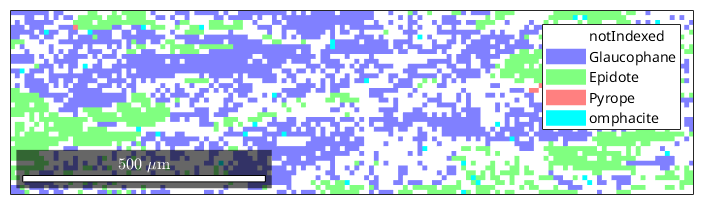
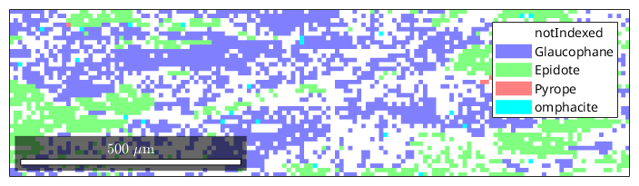

how to calculate average material tensors from ODF and EBSD data
MTEX offers several ways to compute average material tensors from ODFs or EBSD data.
| On this page ... |
| Import EBSD Data |
| Data Correction |
| Define Elastic Stiffness Tensors for Glaucophane and Epidote |
| The Average Tensor from EBSD Data |
| ODF Estimation |
| The Average Tensor from an ODF |
set up a nice colormap
setMTEXpref('defaultColorMap',blue2redColorMap);
We start by importing some ebsd data of Glaucophane and Epidote.
ebsd = loadEBSD([mtexDataPath '/EBSD/data.ctf'],... 'convertEuler2SpatialReferenceFrame')
ebsd = EBSD
Phase Orientations Mineral Color Symmetry Crystal reference frame
0 28015 (56%) notIndexed
1 13855 (28%) Glaucophane light blue 12/m1 X||a*, Y||b, Z||c
2 4603 (9.2%) Epidote light green 12/m1 X||a*, Y||b, Z||c
3 3213 (6.4%) Pyrope light red m-3m
4 295 (0.59%) omphacite cyan 12/m1 X||a*, Y||b, Z||c
Properties: bands, bc, bs, error, mad, x, y
Scan unit : um
Lets visualize a subset of the data
plot(ebsd(inpolygon(ebsd,[2000 0 1400 375])))
next we correct the data by excluding orientations with large MAD value
% define maximum acceptable MAD value MAD_MAXIMUM= 1.3; % eliminate all meassurements with MAD larger than MAD_MAXIMUM ebsd(ebsd.mad >MAD_MAXIMUM) = [] plot(ebsd(inpolygon(ebsd,[2000 0 1400 375])))
ebsd = EBSD
Phase Orientations Mineral Color Symmetry Crystal reference frame
0 28015 (56%) notIndexed
1 13779 (28%) Glaucophane light blue 12/m1 X||a*, Y||b, Z||c
2 4510 (9.1%) Epidote light green 12/m1 X||a*, Y||b, Z||c
3 3212 (6.5%) Pyrope light red m-3m
4 218 (0.44%) omphacite cyan 12/m1 X||a*, Y||b, Z||c
Properties: bands, bc, bs, error, mad, x, y
Scan unit : um

Glaucophane elastic stiffness (Cij) Tensor in GPa Bezacier, L., Reynard, B., Bass, J.D., Wang, J., and Mainprice, D. (2010) Elasticity of glaucophane and seismic properties of high-pressure low-temperature oceanic rocks in subduction zones. Tectonophysics, 494, 201-210.
% define the tensor coefficients MGlaucophane =.... [[122.28 45.69 37.24 0.00 2.35 0.00];... [ 45.69 231.50 74.91 0.00 -4.78 0.00];... [ 37.24 74.91 254.57 0.00 -23.74 0.00];... [ 0.00 0.00 0.00 79.67 0.00 8.89];... [ 2.35 -4.78 -23.74 0.00 52.82 0.00];... [ 0.00 0.00 0.00 8.89 0.00 51.24]]; % define the reference frame csGlaucophane = crystalSymmetry('2/m',[9.5334,17.7347,5.3008],... [90.00,103.597,90.00]*degree,'X||a*','Z||c','mineral','Glaucophane'); % define the tensor CGlaucophane = tensor(MGlaucophane,csGlaucophane)
CGlaucophane = tensor
rank : 4 (3 x 3 x 3 x 3)
mineral: Glaucophane (12/m1, X||a*, Y||b, Z||c)
tensor in Voigt matrix representation:
122.28 45.69 37.24 0 2.35 0
45.69 231.5 74.91 0 -4.78 0
37.24 74.91 254.57 0 -23.74 0
0 0 0 79.67 0 8.89
2.35 -4.78 -23.74 0 52.82 0
0 0 0 8.89 0 51.24
Epidote elastic stiffness (Cij) Tensor in GPa Aleksandrov, K.S., Alchikov, U.V., Belikov, B.P., Zaslavskii, B.I. and Krupnyi, A.I.: 1974 'Velocities of elastic waves in minerals at atmospheric pressure and increasing precision of elastic constants by means of EVM (in Russian)', Izv. Acad. Sci. USSR, Geol. Ser.10, 15-24.
% define the tensor coefficients MEpidote =.... [[211.50 65.60 43.20 0.00 -6.50 0.00];... [ 65.60 239.00 43.60 0.00 -10.40 0.00];... [ 43.20 43.60 202.10 0.00 -20.00 0.00];... [ 0.00 0.00 0.00 39.10 0.00 -2.30];... [ -6.50 -10.40 -20.00 0.00 43.40 0.00];... [ 0.00 0.00 0.00 -2.30 0.00 79.50]]; % define the reference frame csEpidote= crystalSymmetry('2/m',[8.8877,5.6275,10.1517],... [90.00,115.383,90.00]*degree,'X||a*','Z||c','mineral','Epidote'); % define the tensor CEpidote = tensor(MEpidote,csEpidote)
CEpidote = tensor
rank : 4 (3 x 3 x 3 x 3)
mineral: Epidote (12/m1, X||a*, Y||b, Z||c)
tensor in Voigt matrix representation:
211.5 65.6 43.2 0 -6.5 0
65.6 239 43.6 0 -10.4 0
43.2 43.6 202.1 0 -20 0
0 0 0 39.1 0 -2.3
-6.5 -10.4 -20 0 43.4 0
0 0 0 -2.3 0 79.5
The Voigt, Reuss, and Hill averages for all phases are computed by
[CVoigt,CReuss,CHill] = calcTensor(ebsd({'Epidote','Glaucophane'}),CGlaucophane,CEpidote)CVoigt = tensor rank: 4 (3 x 3 x 3 x 3) tensor in Voigt matrix representation: *10^5 25.063 6.002 7.789 -0.235 -0.518 0.617 6.002 17.724 6.209 -0.467 -0.081 0.342 7.789 6.209 23.786 -0.963 -0.325 0.209 -0.235 -0.467 -0.963 7.035 0.267 -0.125 -0.518 -0.081 -0.325 0.267 8.712 -0.2 0.617 0.342 0.209 -0.125 -0.2 7.047 CReuss = tensor rank: 4 (3 x 3 x 3 x 3) tensor in Voigt matrix representation: *10^-3 17.236 4.091 5.131 -0.143 -0.404 0.42 4.091 12.379 4.214 -0.295 -0.059 0.211 5.131 4.214 16.333 -0.631 -0.244 0.13 -0.143 -0.295 -0.631 4.884 0.202 -0.074 -0.404 -0.059 -0.244 0.202 6.131 -0.158 0.42 0.211 0.13 -0.074 -0.158 4.884 CHill = tensor rank: 4 (3 x 3 x 3 x 3) tensor in Voigt matrix representation: *10^5 12.532 3.001 3.894 -0.118 -0.259 0.309 3.001 8.862 3.105 -0.234 -0.041 0.171 3.894 3.105 11.893 -0.481 -0.162 0.104 -0.118 -0.234 -0.481 3.517 0.134 -0.063 -0.259 -0.041 -0.162 0.134 4.356 -0.1 0.309 0.171 0.104 -0.063 -0.1 3.523
for a single phase the syntax is
[CVoigtEpidote,CReussEpidote,CHillEpidote] = calcTensor(ebsd('Epidote'),CEpidote)CVoigtEpidote = tensor rank: 4 (3 x 3 x 3 x 3) tensor in Voigt matrix representation: *10^4 94.81 25.42 30.87 -0.67 -1.19 1.92 25.42 80.01 25.77 0.01 0.34 -0.05 30.87 25.77 92.85 -0.81 -0.04 0.56 -0.67 0.01 -0.81 26.71 0.7 0.24 -1.19 0.34 -0.04 0.7 32.85 -0.36 1.92 -0.05 0.56 0.24 -0.36 26.84 CReussEpidote = tensor rank: 4 (3 x 3 x 3 x 3) tensor in Voigt matrix representation: *10^-3 43.69 12.79 15.43 -0.37 -0.52 0.92 12.79 35.77 13.14 -0.02 0.27 0.01 15.43 13.14 42.89 -0.39 0.17 0.23 -0.37 -0.02 -0.39 11.46 0.37 0.1 -0.52 0.27 0.17 0.37 14.74 -0.16 0.92 0.01 0.23 0.1 -0.16 11.53 CHillEpidote = tensor rank: 4 (3 x 3 x 3 x 3) tensor in Voigt matrix representation: *10^4 47.4 12.71 15.43 -0.34 -0.6 0.96 12.71 40 12.89 0 0.17 -0.03 15.43 12.89 46.42 -0.41 -0.02 0.28 -0.34 0 -0.41 13.35 0.35 0.12 -0.6 0.17 -0.02 0.35 16.42 -0.18 0.96 -0.03 0.28 0.12 -0.18 13.42
Next we estimate an ODF for the Epidote phase
odfEpidote = calcODF(ebsd('Epidote').orientations,'halfwidth',10*degree)
odfEpidote = ODF
crystal symmetry : Epidote (12/m1, X||a*, Y||b, Z||c)
specimen symmetry: 1
Portion specified by Fourier coefficients:
degree: 28
weight: 1
The Voigt, Reuss, and Hill averages for the above ODF are computed by
[CVoigtEpidote, CReussEpidote, CHillEpidote] = ... calcTensor(odfEpidote,CEpidote) % set back the colormap setMTEXpref('defaultColorMap',WhiteJetColorMap);
CVoigtEpidote = tensor rank: 4 (3 x 3 x 3 x 3) tensor in Voigt matrix representation: 207.41 60.93 65.68 -0.81 -0.85 2.25 60.93 170.74 61.02 -1.13 -0.14 2.25 65.68 61.02 203.97 -1.13 -0.85 0.56 -0.81 -1.13 -1.13 63.17 0.85 -0.35 -0.85 -0.14 -0.85 0.85 70 -0.16 2.25 2.25 0.56 -0.35 -0.16 64.07 CReussEpidote = tensor rank : 4 (3 x 3 x 3 x 3) doubleConvention: true tensor in Voigt matrix representation: 192.78 62.17 65.86 -2.03 -0.14 4.55 62.17 157.03 62.9 -2.06 0.58 3.84 65.86 62.9 190.66 -2.34 -0.13 0.6 -2.03 -2.06 -2.34 219.36 3.9 -0.73 -0.14 0.58 -0.13 3.9 251.69 -0.34 4.55 3.84 0.6 -0.73 -0.34 222.63 CHillEpidote = tensor rank: 4 (3 x 3 x 3 x 3) tensor in Voigt matrix representation: 200.09 61.55 65.77 -0.91 -0.46 2.26 61.55 163.88 61.96 -1.08 0.07 2.08 65.77 61.96 197.31 -1.15 -0.46 0.43 -0.91 -1.08 -1.15 59 0.91 -0.27 -0.46 0.07 -0.46 0.91 66.46 -0.12 2.26 2.08 0.43 -0.27 -0.12 59.86
| DocHelp 0.1 beta |